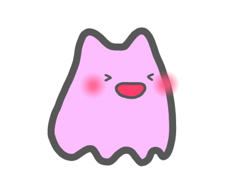
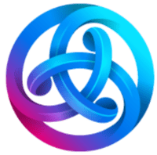

Welcome to House of Murasaki-san!
This is our fan project using Astar Network.
Change Log
# Change Log
All notable changes to this project will be documented in this section.
The format is based on [Keep a Changelog](http://keepachangelog.com/)
and this project adheres to [Semantic Versioning](http://semver.org/).
## [1.0.0] - 2023-XX-XX
### Released
- House of Murasaki-san was launched.
What's This? 🍀
House of Murasaki-san project is a dApp game built on Astar Network.
You can summon your Murasaki-san character and care them to grow.
You can Demo Preview before summoning your Murasaki-san.
(Developer's character. No transactions are permitted except for Feeding.)
What's the Murasaki-san...?
One day, when I asked a friend to "create an original character that doesn't exist anywhere else", Murasaki-san was born on the edge of our sketchbook. Well, we all know that the name, murasaki-san, is a bit strange; murasaki-san means "Mr. Purple" in Japanese. My friend first painted this little character purple so we could only call it murasaki-san and we finally ended up naming it "Murasaki-san", even though it's actually a little pink ;)
That's why I started creating on a game to move, take care of, and grow Murasaki-san. It was just two weeks after the Astar Network launched and we wanted to build something fun on Astar chain. After about a year of development period, we are happy to launch House of Murasaki-san on the Astar Network :)
Cheers to Astar and Murasaki-san.
<cheers!
The Main Concept 🌷
--- Under construction ---
Murasaki-san is the digital pet living in your wallet.
Murasaki-san and the house...time is the most important cost, and slow and long.
How to Play 📘
- Mint your murasaki-san (it's SBT, not NFT).
- Feeding and Grooming your murasaki-san to ean EXP.
- You can Level up your murasaki-san by accumulating EXP.
- Work your murasaki-san for Mining to earn Coin or Farming to earn Leaf.
- Murasaki-san can Crafting to mint item NFT by paying Coin or Leaf.
- If you want, item NFTs can be bought and sold on the Marketplace using $ASTR.
- House of murasaki-san will become more and more lively as you continue to take care of your murasaki-san diligently.
Do not forget to Feed twice a day and Groom once every three days.
Time is the most important resouce.
Cost to Play 💰
Mint Price: 200 $ASTR 
The mint price will inflate little by little as the game economy expands.
(Expected example: 3% inflation after a month, 206 $ASTR)
Basically, there are no billing systems requiring additional costs that affect gameplay, except for the Dapps Staking Bonuses (see below). If you buy or sell item NFTs on the Marketplace, some $ASTR will be needed.
Attentions ❗❗
- Murasaki-san is an SBT, not an NFT, so it cannot be transferred or sold.
On the other hand, you can buy and sell crafted item NFTs. - If you neglect to take care of your Murasaki-san for a long time (about a month), Murasaki-san will become petrified, and you will need some additional cost to cure.
- Botting play using multi-wallets is profibited. You will be penalized for violating the anti-bot policy.
Dapps Staking Bonus! 🥳
--- We have not applied for Builder's Program yet ---
--- These bonuses might be active in the future ---
There are in-game bonuses depending on your dapps staking amount for this project.
- Get an extra presentbox every interval period.
The higher the staking amount, the shorter the interval until the gift.
- Some items change the picture or animation according to your staking amount.
Observe carefully, or spoiled below.
Item Marketplace 🌏
Item NFTs can be bought and sold on the Marketplace with 5% royalty fee.
We have not own token and $ASTR is used as the trading currency.
Attention:
Only wallets with an active Murasaki-san SBT can use the Marketplace.
Hints 💬
- At the level-up, status point of Murasaki-san will increase depending to behavier. Ex: if you spent more time for mining, the more strength will increase.
- The exp gained by grooming depends on not-working time. It means that if you did not make your Murasaki-san work, grooming will give a lot of exp to faster level-up.
- If you leave your Murasaki-san for a long long time (about a month), Murasaki-san will be petrified with deeply disappointment. Once petrified, your Murasaki-san can not do anything. For incentives of dedication, we have set some cost for cure petrification.
CAUTION: To cure petrification, you need Lv x 10 $ASTR cost. -
If you know friend's Murasaki-san ID, you can visit his/her house.
You can do feeding other player's Murasaki-san to earn a little extra exp.
Murasaki-san ID:
Game Specifications 🔬
--- Under construction ---
You can take care of your Murasaki-san with these actions.Actions
Status Details
| Status | Discriptions |
|---|---|
| Level | Affects almost all action efficiencies. Increases by level-up. |
| Exp | Need to level-up. Can be earned by feeding and grooming. |
| Strength | Affects mining efficiency. Increases by level-up and crafted items. |
| Dexterity | Affects farming efficiency. Increases by level-up and crafted items. |
| Intelligence | Affects crafting efficiency. Increases by level-up and crafted items. |
| Luck | Affects critical judgment. Increases by level-up. Critical success: earning x2 coin/material in mining/farming; crafting rare items; earning x2 exp in feeding/grooming. |
| Satiety | Decreases over time and reaches 0% in 12 hours. Be recovered by feeding. When below 20%, your Murasaki-san can not start new working. |
| Happy | Decreases over time and reaches 0% in 72 hours. Be recovered by grooming. When below 20%, your Murasaki-san can not start new working. |
Item Upgrading
blah-blah-blah...All Item Details
Crafting items require costs and time. Items increase status point and make your house more lively.
| Items | Discriptions |
|---|---|
| Mr. Astar | +1 Strength. Summon a small pet in your house. |
| Music Box | +1 Intelligence. Set up a Music box in your house. You can click to play music. |
| Violin | +1 Intelligence. Set up a Violin in your house. |
| Flowerpot | +1 Dexterity. Set up a Flowerpot in your house. |
Lucky Dice
blah-blah-blah...Buyback System
blah-blah-blah...Taking Care of Other Murasaki-san
blah-blah-blah...About Fluffy: Overview
blah-blah-blah...About Fluffy: Crafting Bonus
blah-blah-blah...About Fluffy: Cat-Mail Communication Bonus
blah-blah-blah...About Fluffy: Fluffy Festival
blah-blah-blah...About Fluffy: Dapps Staking Bonus
blah-blah-blah...More Detailed Specifications 🧬
--- Under construction ---
Contract Details
blah-blah-blah...
STR/DEX Modification
blah-blah-blah...
INT Modification
blah-blah-blah...
LUK and Critical
blah-blah-blah...
Buyback Treajury
blah-blah-blah...
Economy Design 🏦
--- Under construction ---
Token Currency
blah-blah-blah...
Buyback System
blah-blah-blah...
Inflation rate
blah-blah-blah...
Play to Earn...? 🪙
--- We have not applied for Builder's Program yet ---
--- The strategy of Buyback system could be changed ---
Don't expect too much.
We will NOT issue our own tokens that can be pumped and dumped.
Based on market principles, item NFT may or may not be priced high. Sometimes it may sell for a high price on the marketplace. But we think these are always temporary.
We think playing games only to earn money is kind of a pain. But we also understand it is fun to realize that the NFTs you own have some value.
To improve on this goal, we have devised a buyback system. Half of the mint cost is immediately sent to the buyback vault, which buys item NFTs for a fixed amount at any time. This minimum price is by no means a high amount, but will never fall, and will rise little by little as the game economy expands.
It may be difficult to make money using the Buyback System, but it will prove that the NFTs we have are not worthless.
Future Plan ⏳
Just after launch:
Our priority is to control inflation rate and keep the game going.
- Fixing bags.
- Improving UI details.
- Correcting typo and misspelling.
- Controling inflation of buyback system.
We would be happy if a lot of people played the game, but it would also be nice if there were a few dedicated enthusiasts, so we does not plan to do any excessive marketing.
After that:
It takes about two years for House of Murasaki-san to reach maximum growth. Over this two years, we plan to create the next product which uses the statuses of our Murasaki-san. Since Astar Network supports both EVM and WASM, so we plan to use Rust to create our next product on WASM, and interacting with House of Murasaki-san via XCM (Well, the coder is enjoying learning Rust now and is interested in Bevy framework).
The concept of the next product is still undecided well, but we would like to make a work related to travel (actually, the last items Murasaki-san can craft are related to travel).
One day, a grown your Murasaki-san may set off on a journey with their friends.
For the Developers 🔧
We prepared the contract to refer to the information of Murasaki-san. Using this contract, you can get the status values of specific Murasaki-san from the wallet address such as Level, Age, Name, STR, DEX, present satiety, score, total_exp_gained, total_item_crafted, and so on.
- Contract Address: XXX
- Contract ABI: XXX
- Contract interface in Solidity: YYY
This contract allows you to use Murasaki-san information linked to a specific wallet in your web pages and contracts (ex: display the Murasaki-san Name and Level from the connected wallet in your Web page, etc.).
Please feel free to use.
About Us 🌼
We are one of the supporter of Astar Network ecosystem and Polkadot union.
This is our fan project using Astar blockchain and our manufacturing concept is
"making things that we ourselves enjoy playing".
We hope you like too.
- The coder: degupoppo🐀 (wallet: 0x2F7448B62134e52C2f46454d0089Ae21B5248805)
A hobby coder with lots of typos who loves rodents like degue. - The illustrator: fumamo🐈 (wallet: 0xe79d44309e4daD2CD7eaf3CA4CD1d80a6b8733f7)
A whimsical hobby illustrator who loves cats and fluffy dolls.
Terms of Service 🤖
All materials, information, products, software, programs, and services are provided "as is," with no warranties or guarantees whatsoever. We expressly disclaims to the fullest extent permitted by law all express, implied, statutory, and other warranties, guarantees, or representations, including, without limitation, the warranties of merchantability, fitness for a particular purpose, and non-infringement of proprietary and intellectual property rights. Without limitation, we makes no warranty or guarantee that this web site will be uninterrupted, timely, secure, or error-free.
Anti-bot policy:
--- Under construction ---
- The same browser or the same IP address mint three or more Murasaki-san.
Acknowledgments ✨
We would like to express our thanks to followings:
- Excellent game framework from Phaser3.
- Useful sound effects from Kokaon Lab and OtoLogic.
- Wealthy illustrations from Irasuto-ya.
- Good musics from DOVA-SYNDROME.
- Great CSS framework from Simple.css.
- Some solidity codes and really good inspiration from Rarity by Andre Cronje.
- Amazing development environment and testnet from Astar Network
- The exciting future vision presented by Sota Watanabe and all the Web3 contributors.